Rekonstrukcja kursu „The Formula" by PolishMaster ($97 ≈ 970 kr) z darmowych źródeł · 2026-09-21 · 30+ źródeł (All3DP, Prusa, CoEX, Kingroon, Alliance Chemical, Reddit, Instructables, fora automotive) · subagent research + synteza
TL;DR: Cała wiedza z kursu jest darmowa — to standardowy pipeline z automotive detailing przeniesiony na wydruki 3D. Kurs sprzedaje strukturę i porządek, nie tajną wiedzę. Twój koszt materiałów: ~440 kr (budżet Biltema) zamiast 970 kr za kurs + narzędzia i tak musisz kupić sam.
🎯 Dlaczego filmiki PolishMastera wyglądają tak dobrze
Z analizy klatek TikToka: ujęcia brzydkich wydruków = prawdziwe nagrania; finalne „idealne lustro" = najpewniej AI (roztopione palce w rękawiczce, nienaturalny połysk). Taki sam print nie wygląda identycznie przed i po. Efektu z filmu NIE da się osiągnąć samym szlifowaniem w 2 sekundy — ale realny pipeline daje 90% tego efektu.
1️⃣ ZACZNIJ OD DRUKU (największa dźwignia)
Kurs ma to jako „print settings that leave a surface ready to finish". Bez tego szlifowanie trwa 3× dłużej:
Layer height: 0.16 mm (sweet spot) / 0.12 mm (detale)
Ściana zewnętrzna: 30 mm/s ← NAJWAŻNIEJSZY jeden settings
Ściany wewnętrzne: 60 mm/s
Flow: 98%
Temp: 240–250°C (lepsza adhezja warstw = mniej pęknięć przy szlifie)
Cooling: 0–40% (nigdy >50% dla PETG!)
Perimetry: 3+ (ściana ≥1.2 mm)
Retraction: 0.7 mm @ 40 mm/s
Seam: BACK / painted (jedna linia, nie random po całym modelu)
Ironing: 30 mm/s, 95% flow — TYLKO płaskie powierzchnie
Arachne: ON
Variable LH: 0.08→0.16 mm na krzywiznach
💡 Spód na szkle/poliwęglanowej płycie = niemal lustro gratis, zero szlifowania.
2️⃣ PIPELINE SZLIFOWANIA (rdzeń kursu)
RAW PRINT → obczyć supports/stringing → umyć wodą z mydłem → odtłuścić IPA
│
▼ SZLIF WSTĘPNY (na sucho)
P180 → zdejmuje layer lines
P220 → usuwa rysy po 180
P320 → wygładzenie; PETG: LEKKI docisk (miękki materiał, łatwo o dziury)
│
▼ OD 400 NA MOKRO (PETG topi się od tarcia — obowiązkowo!)
P400 → P600 → P800 (wiadro z wodą, mokra ścierka)
│
▼ FILLER (gdy warstwy nadal widać)
├── Szybko: spray filler primer (2–3 cienkie warstwy, schnie 1–2 h, mokro P600)
└── Głęboko: epoxy + microballoons / XTC-3D (samo wyrównuje, 24 h, mokro P400→600)
│
▼ LAKIER (jeśli chcesz LUSTRO, nie satynę)
5–8 BARDZO cienkich warstw clear coat (uretan, nie tani akryl)
24 h utwardzania → mokro P1000 → P1500 → P2000 (usuwa „orange peel")
│
▼ POLERKA
Novus #1 → #2 → #3 (albo 3M Perfect-It / Meguiar's)
mikrofibra / kulka bawełniana; przy maszynie: buffer <2000 RPM, cały czas w ruchu
│
▼ MIRROR ✨
⚠️ PETG-specific: mokre szlifowanie od 400+ (sucho = gumowaty szlam zapycha papier); Dremel tylko na niskich obrotach i w ciągłym ruchu (pełne obroty = stopiony plastik); polerka <2000 RPM.
📸 GALERIA Z FILMIKÓW (74 klatki zweryfikowane vision)
Klatki z 6 tutoriali YT — automat: pobranie filmu + transkrypcji, ekstrakcja klatek co ~15 s, klasyfikacja PRZED/KROK/PO modelem vision, captione po polsku. Kliknij ▶ żeby obejrzeć cały film.
JustGee3D — SAMA papier ścierny: kopuła od surowca do połysku ▶ eWcl-IgPdWg
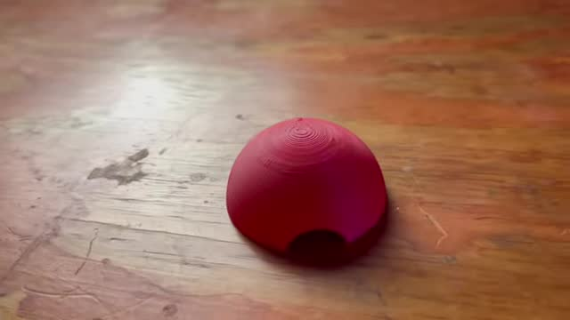
PRZED0:15 Czerwona kopuła z druku 3D na drewnianym stole — wyraźne, grube linie warstw widoczne na powierzchni.
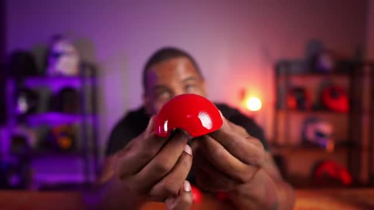
PRZED0:10 Czerwona kopuła z druku 3D trzymaná w ręku — wyraźne linie warstw charakterystyczne dla FDM przed rozpoczęciem szlifowania.
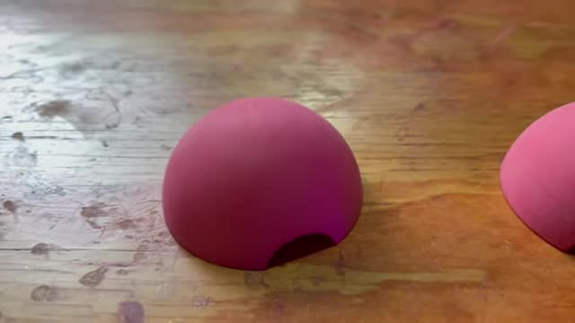
KROK1:45 Wygląd części po gruboziarnistym szlifowaniu (ok. 80 grit) — matowa powierzchnia, widoczne ślady papieru, linie warstw spłaszczone.
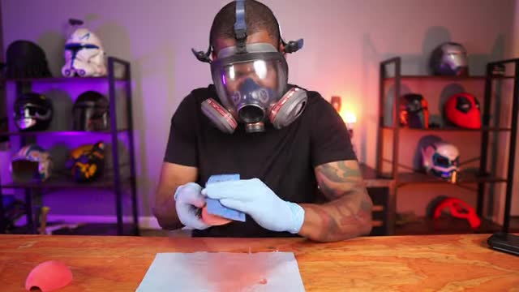
KROK3:30 Szlifowanie na mokro niebieskim papierem Hercules (220 grit) w rękawiczkach i masce — przechodzenie na wyższe ziarnistości.
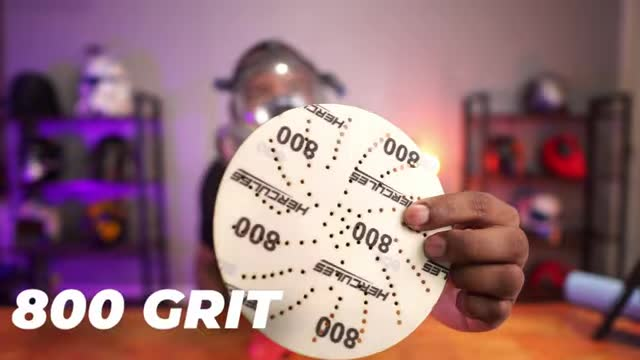
KROK5:15 Zaawansowana fazа szlifowania gruboziarnistym papierem oznaczonym 800 grit — powierzchnia staje się coraz bardziej jednolita.
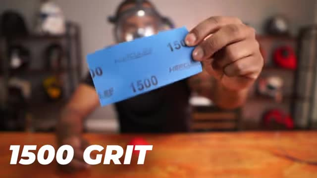
KROK6:00 Papier szklarniowy o granulacji 1500 grit — bardzo drobna ziarnistość zbliżająca się do połysku bez użycia lakieru.
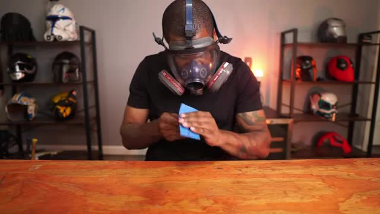
KROK6:30 Końcowe szlifowanie na mokro ultra-gruboziarnistym papierem (2000+ grit) w masce — polerowanie do lustrzanego połysku wyłącznie mechanicznie.
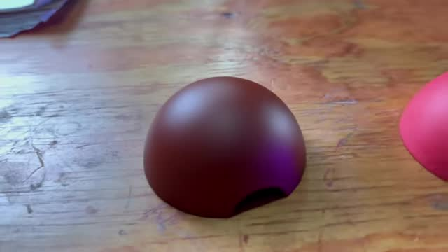
PO4:00 Porównanie dwóch kopeł: lewa matowa (po niższych gradach), prawa ciemniejsza i błyszcząca (po wysokich gradach) — efekt progresji ziarnistości bez wypełniaczy.
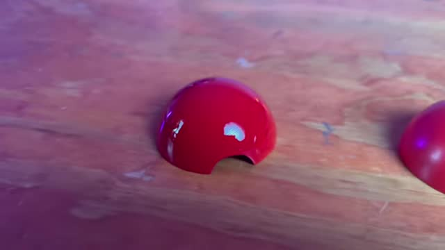
PO7:30 Bardzo błyszczące wykończenie czerwonej kopuły osiągnięte wyłącznie poprzez sekwencyjne szlifowanie od 80 do 2000+ grit — zero fillerów, zero lakierów.
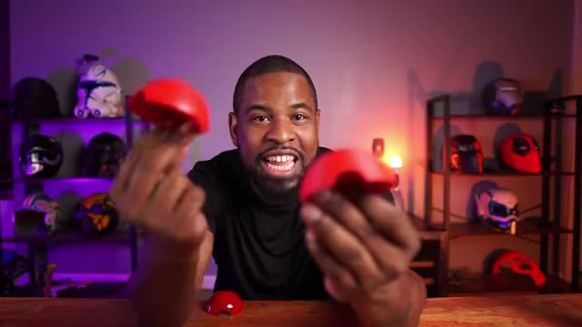
PO9:00 Prezentator trzyma dwie czerwone kopuły obok siebie pokazując różnicę między surowym wydrukiem a finiszem z szlifowania.
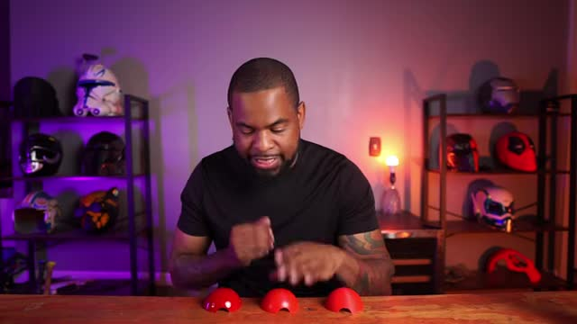
PO9:30 Trzy czerwone kopuły na stole — porównanie różnych etapów szlifowania: od surowej przez częściowo wygładzoną do lustrzanej powierzchni.
PRZED01:30 Surowa, niepolerowana część drukarki 3D z widocznymi liniami warstw – stan przed obróbką.
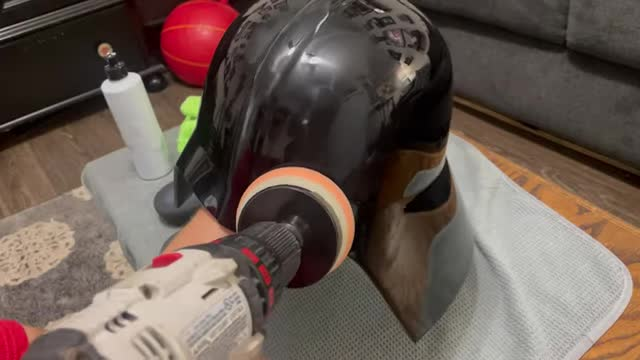
PRZED18:45 Malowana części o matowej powierzchni – przed ostatecznym polerowaniem.
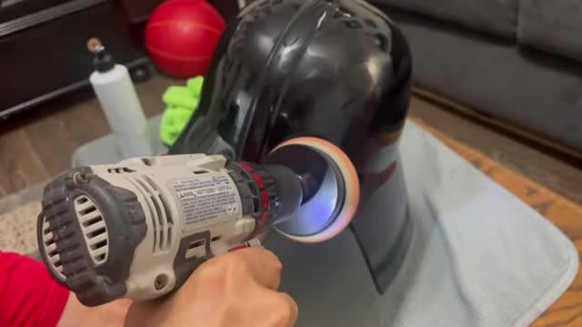
PRZED19:15 Oględziny pod mocnym światłem, pokazujące ślady szlifowania do usunięcia.
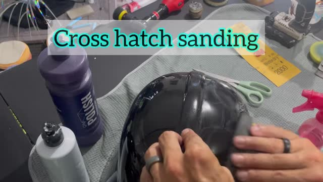
KROK08:30 Ręczny szlif na mokro z mydlaną wodą jako smarowadłem – technika wstępnego wygładzania.
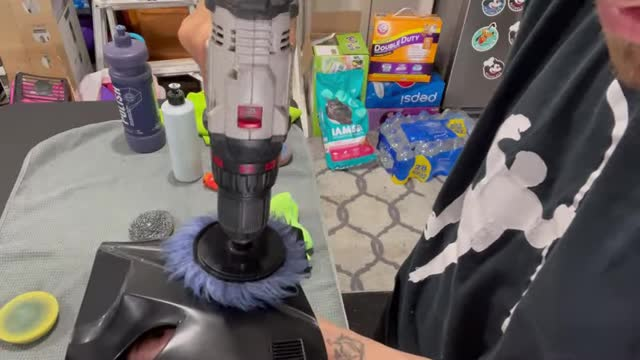
KROK09:45 Szlifowanie na mokro zbliżone z użyciem papieru ściernego i wody.
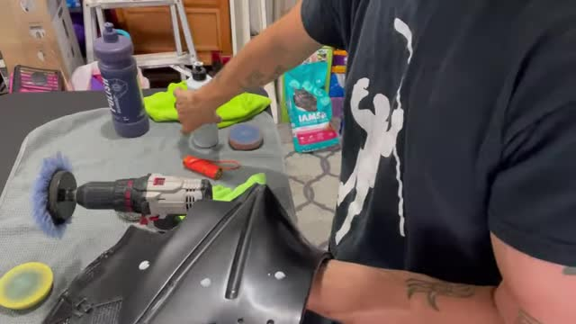
KROK10:30 Materiały ścierne – papier 3000-grit Trizact i compoundy polerskie przygotowane do pracy.
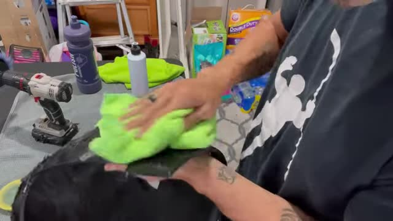
KROK11:15 Nałożenie pasty polerskiej na powierzchnię przed polerowaniem wiertarką.
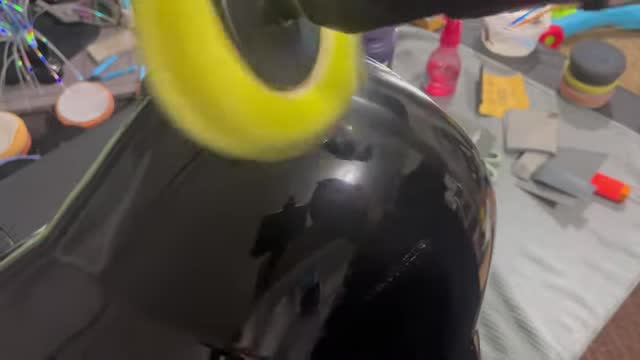
KROK12:45 Polerowanie wiertarką z żółtym dyskiem polerskim – nacieranie pasty na powierzchnię.
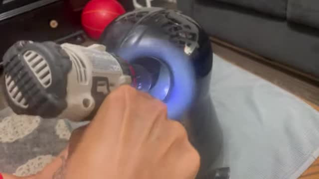
KROK13:30 Zmiana dysku na puszysty, fioletowy – kolejna faza polerowania dla gładszego błysku.
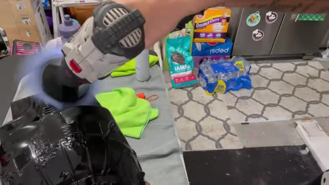
KROK16:15 Inspekcja pod silnym światłem latarki, ujawniająca pozostałe oznaczenia po szlifowaniu.
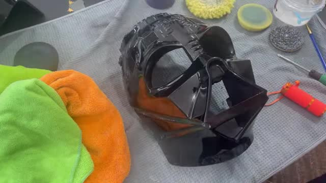
KROK16:45 Polerowanie precyzyjnych obszarów przyrządem obrotowym (grawurka/Dremel).
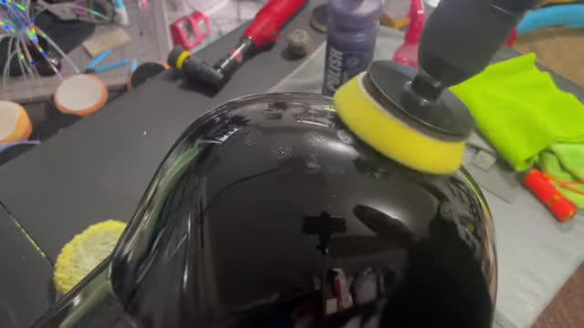
KROK20:15 Polerowanie wiertarką – na powierzchni pojawia się już wyraźne odbicie, znak postępu.
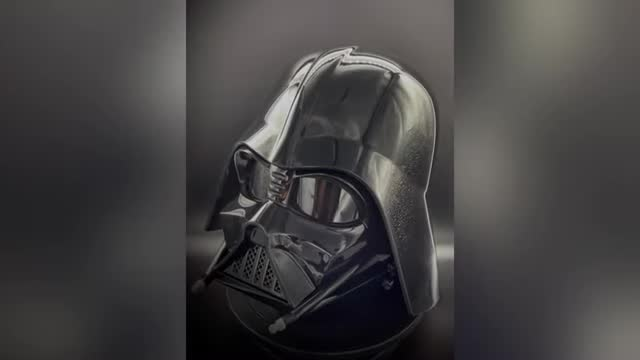
KROK23:15 Wytrzećie mikrofibrową szmatką i kontrola postępu polerowania.
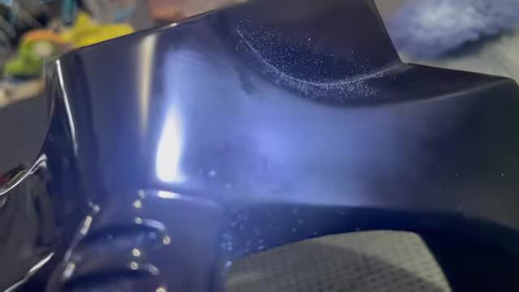
PO15:15 Polersowany element przedni hełmu z wyraźnym błyskiem – końcowy efekt polerowania.
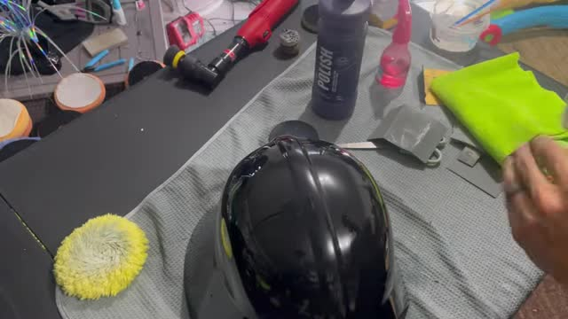
PO20:00 Hełm z lustrzanym wykończeniem – głęboki, zwierciadlany połysk bez widocznych linii warstw.PO21:00 Gotowy hełm obok użytych narzędzi (wiertarka, grawerka) – pełny sukces procesu polerowania.
Salveo — lustro na wiertarce (szlif tokarny uchwytu) ▶ VgIhizroSac
PRZED01:45 Surowy uchwyt szczotki wydrukowany 3D z wyraźnie widocznymi liniami warstw FDM.PRZED02:00 Uchwyt zamontowany w imadle wiertarskim – przygotowanie do szlifowania na tokarce.KROK01:00 Szczegół uchwytu podczas obróbki – powierzchnia przygotowywana do polerowania.KROK01:15 Zbliżenie na surową teksturę plastiku – widoczna chropowatość przed szlifowaniem.PO00:00 Lustrzanie wypolerowany uchwyt z efektem metalicznych płatków – zero linii warstw.PO00:15 Zbliżenie bazy uchwytu – idealnie gładka, lustrzana powierzchnia bez śladów druku 3D.PO02:15 Końcowy efekt od spodu – równomiernie połyskująca powierzchnia gotowej szczotki.
PRZED01:00 Surowy czerwony kapelusz grzyba wydrukowany 3D – wyraźnie widoczne linie warstw FDM.PRZED00:15 Czerwona domka/przedmiot przed jakimikolwiek zabiegami wygładzającymi.KROK00:00 Wsypywanie mączki dziecinnej do kubka – pierwszy składnik mieszanki wygładzającej.KROK01:45 Dozowanie żywicy UV do kubka – drugi składnik mieszaniny z mączką dziecinną.KROK02:00 Staranne mieszanie pasty z mączki dziecinnej i żywicy UV patykiem – konsystencja gotowa do malowania.KROK02:30 Nakładanie mieszanki piankowym pędzelkiem na powierzchnię wydruku – zasypianie linii warstw.KROK02:45 Oczyszczanie wgłębień patyczkiem do uszu – zachowanie detali przed utwardzeniem.KROK03:00 Utwardzanie promieniami UV w komorze – fioletowe światło utwardza żywicę w ciągu minut.KROK01:30 Szlifowanie utwardzonej powłoki – wyrównanie powierzchni po utwardzeniu mieszanki.KROK02:15 Grunt wypełniający Rust-Oleum – kolejny krok wyrównywania powierzchni przed farbowaniem.KROK01:30 Natrysk gruntu wypełniającego na podświetloną powierzchnię – ostatnie wyrównanie przed lakierem.KROK00:45 Mieszanie składników w czerwonym kubku – kluczowy moment tworzenia pasty wygładzającej.PO03:30 Ostateczny efekt – całkowicie gładka, mocno błyszcząca powierzchnia bez śladów druku 3D.PO08:15 Aplikacja niebieskiego metalicznego lakieru aerografem – kolor i połysk na idealnie gładkim podłożu.PO09:15 Skrajne zbliżenie – szklisty, metaliczny połysk perfekcyjnie gładkiej powierzchni pomalowanej.PO10:15 Porównanie przed i po – lewa strona surowy wydruk z liniami, prawa strona idealnie wygładzony rezultatem techniki z mączką i żywicą.
🎯 A tak robi to PolishMaster (TikTok) — analiza klatek
HOOK Surowy druk z layer lines + tekst "YOUR PRINTS LOOK PRINTED" — ujęcie prawdziwe (makro)PROCES Szlifowanie kostki papierem ściernym w nitrylowych rękawiczkach — prawdziwe ujęciePROCES Czyszczenie stringingu pędzelkiem — prawdziwe ujęciePO — PODEJRZENIE AI "Idealne lustro" — roztopione palce w rękawiczce i zmieniona geometria figury wskazują na generację AI
Wniosek: prawdziwe "brzydkie" ujęcia (wiarygodność) + AI-generated "efekt" (wow). Tego samego nie da się osiągnąć szlifem w 2 sekundy — realne efekty masz w galeriach powyżej.
3️⃣ RÓWNOLEGŁA DROGA: CHEMIA (PETG ≠ ABS!)
❌ Nie działa na PETG
Acetone vapor — PETG go praktycznie nie ropuszcza (to działa tylko na ABS/ASA). Najczęstszy dead end.
IPA, naphtha — zero efektu
✅ Rozpuszczalniki, które działają
Ethyl acetate — jedyny polecany dla amatora: mała toksyczność, tani, słaby zapach (jest w zmywaczu do paznokci!). Kąpiel parowa: ręczniki papierowe nasączone w słoju/pojemniku PP, print NIE dotyka cieczy, kilka minut–2 h, kontrolować co chwilę
MEK — skuteczny, ale: butylowe rękawice (nitryl NIE chroni!), respirator z filtrem organicznym, tylko na zewnątrz, skrajnie łatwopalny
THF, DCM, toluen — działają, ale kancerogenne/regulowane — odpuszczamy
Werdykt chemii: ethyl acetate parą = fajny eksperyment za ~50 kr na drobnych częściach. Dla pełnego lustra na większych modelach i tak wygrywa pipeline szlif+lakier. Kurs tego NIE nauczy lepiej — to ta sama wiedza.
4️⃣ ZAKUPY (Szwecja) 🛒
Pozycja
Sklep
Cena
Papier wodny P200+P400+P800 (sety)
Biltema
~150 kr
Mirka/3M P1200–P2000
Woodisol/Amazon.se
~250–400 kr
Gąbki szlifierskie + klocek
Biltema/Clas Ohlson
~140 kr
Filler primer spray (Rust-Oleum Fill&Sand / Dupli-Color)
Biltema/Jula
~100–150 kr
Clear coat uretanowy (Rust-Oleum Prof.)
Biltema
~80–120 kr
Ethyl acetate (eksperyment)
apotek/farbhandel
~50 kr
Novus #2+#3 lub Meguiar's M105/M205
Amazon.se
~250–350 kr
Budżet start (Biltema wszystek, bez past polerskich): ~440 kr · Z pastami do lustra: ~1000–1300 kr (jednorazowo, starcza na setki wydruków)
💡 Kurs kosztuje 970 kr i nie zawiera materiałów — sam wproawdza: „abrasives, compounds and pads are consumables you buy locally". Czyli kurs = 970 kr za kolejność kroków, którą masz wyżej.
5️⃣ NARZĘDZIA DO WYDRUKOWANIA (darmowe, jak „15+ printable tools" w kursie)